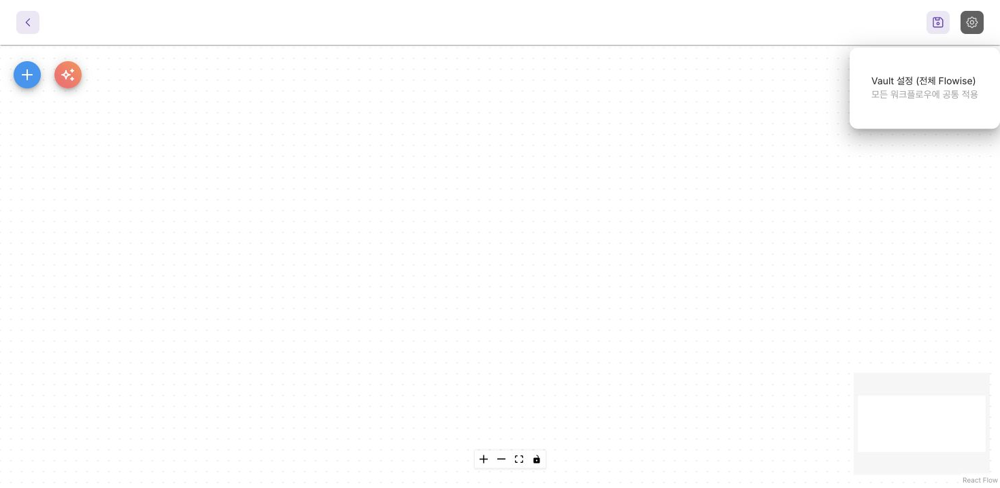
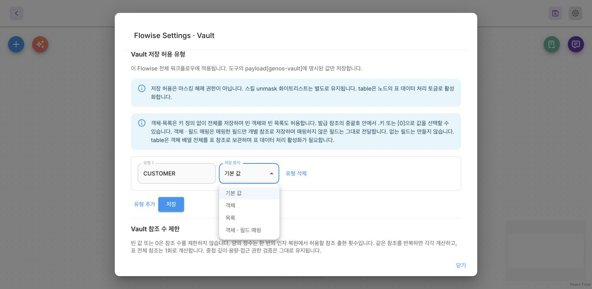
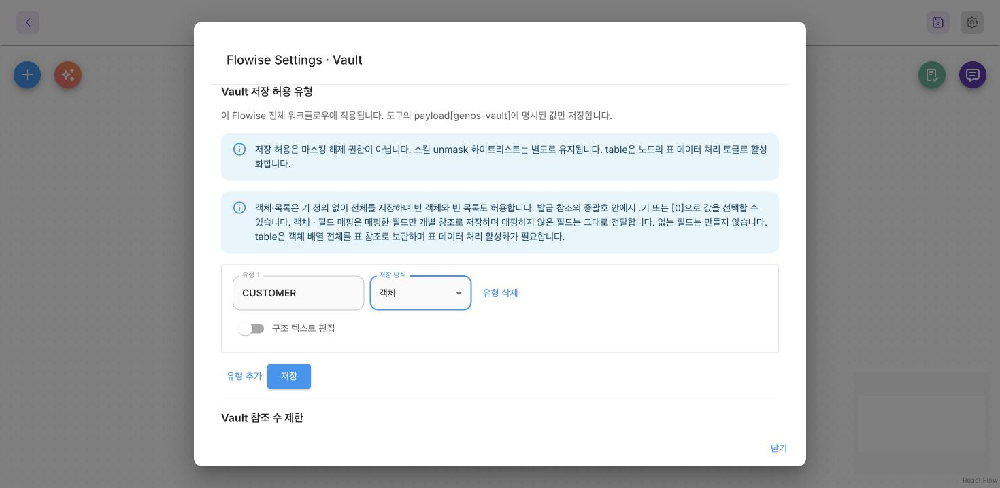
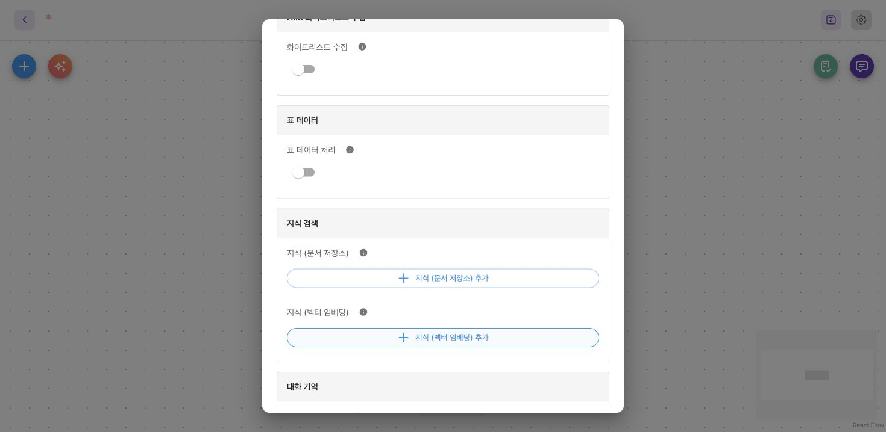

Vault는 명시적으로 선언한 출력값을 서버에 저장하고, 실행 중인 모델에는 {{$vault.CUSTOMER_<UUID>}} 같은 참조를 줍니다. 모델은 이 참조를 업무 도구의 인자나 답변에 사용할 수 있고, 서버가 필요한 시점에 실제 값을 복원합니다. 일반 값에는 vault_load 호출 단계가 없습니다.
설정 화면
전역 Vault 설정 열기
워크플로우 캔버스 오른쪽 위 설정 톱니바퀴 → Vault 설정 (전체 Flowise) 를 엽니다. 모든 워크플로우에 공통 적용이라는 설명을 확인하세요.

유형과 저장 방식 고르기
제목이 Flowise Settings · Vault, 첫 영역이 Vault 저장 허용 유형이면 맞는 화면입니다. 유형 추가로 CUSTOMER를 입력하고 저장 방식을 선택합니다.

확인할 항목: 기준 버전의 선택지는 기본 값·객체·목록·객체 · 필드 매핑입니다. 새 원시 타입·인라인 중첩 편집기는 아직 반영되지 않은 별도 변경입니다.
객체 전체를 하나의 참조로 전달하려면 객체를 고릅니다. 아래 구조 텍스트 편집은 설명을 쓰는 선택 사항이므로, 객체 저장 자체를 위해 켤 필요는 없습니다.

전역 유형을 바꾸려면 이 화면의 저장을 사용합니다. 캔버스의 워크플로우 저장과는 다른 설정입니다.
표를 사용할 때만 노드 설정 켜기
모니모 Agent → 설정 → 표 데이터 → 표 데이터 처리를 확인하세요. table 선언과 표 도구를 사용할 노드에서 켭니다.

확인할 항목: 표 데이터 처리와 화이트리스트 수집은 서로 다른 옵션입니다. 표 토글만 꺼도 전역에 등록된 일반 Vault 유형의 처리는 유지될 수 있습니다.
데모로 참조 복원 확인하기
객체 전체, 특정 필드, 문장 안의 참조를 바꿔 보세요. 모델이 보내는 참조와 업무 도구가 받는 실제 값을 비교할 수 있습니다. 없는 키와 사용할 수 없는 참조도 확인해 보세요.
합성 동작 데모 · 실제 도구 호출 없음 · 크게 열기
객체 하나 저장하고 다시 사용하기
Settings → Vault에서 CUSTOMER를 등록하고 저장 방식을 객체로 선택하세요. 그런 다음 도구가 아래 결과를 반환하도록 합니다.
{
"success": true,
"payload": {
"customer": {"name": "예제 고객", "balance": 120000, "active": false},
"genos-vault": [{"type": "CUSTOMER", "path": "$output.payload.customer"}]
}
}
모델에게 보이는 payload.customer는 발급된 참조로 바뀝니다. 반환된 문자열을 그대로 사용하세요. 데모의 UUID는 설명용이며, 실제 참조를 임의로 만들거나 줄여서는 안 됩니다.
{"customer": "{{$vault.CUSTOMER_a0000000-0000-4000-8000-000000000001}}"}
업무 도구에는 원래 JSON 객체가 전달됩니다. {{$vault.CUSTOMER_a0000000-0000-4000-8000-000000000001.balance}}를 사용하면 숫자 120000이 전달됩니다. 필드 접근자는 중괄호 안에 넣으세요. }} 뒤에 .balance를 붙이면 필드 선택이 되지 않습니다.
저장 방식 고르기
| 이 브랜치의 저장 방식 | 모델이 받는 값 | 알아둘 점 |
|---|---|---|
| 기본 값 | 선언한 값의 참조 | 유형 이름만으로 원시 타입이나 업무 스키마를 검증하지 않음 |
| 객체 또는 목록 | 전체 값의 참조 하나 | 모든 키를 선언하지 않아도 중첩 키·인덱스 접근 가능 |
| 객체 · 필드 매핑 | 매핑한 필드가 참조로 바뀐 원래 구조 | 매핑하지 않은 필드는 그대로 보이며, 없는 필드는 만들지 않음 |
표 데이터 처리를 켠 table |
표 참조 | 객체 행의 배열이 필요하며, 일반 객체 접근 대신 표 도구를 제공 |
{"name": str, "balance": number} 같은 shape 텍스트는 모델에 값의 구조를 설명합니다. 업무 값을 검증하거나 필드를 개별 참조로 나누는 설정은 아닙니다. 이 브랜치에서 중첩 필드 매핑은 별도로 등록한 유형을 연결합니다. PR #23737의 인라인 중첩 필드 편집기와 명시적 원시 타입 선택은 아직 반영되지 않은 Vault 후속 브랜치에 있습니다.
기술 사양과 주의사항
참조와 복원 경계
-
선언 경로의 시작점은 참조로 바꾼 결과가 아니라 원래 도구 JSON입니다.
$output.payload.customer.name과 JSON Pointer/payload/customer/name은 같은 필드를 가리킵니다. 선언은payload안에 두고 대상도 해당 payload 안에 있어야 합니다. -
인자 전체를 참조로 지정하면 객체·배열·
0·false·null을 포함한 원래 JSON 타입으로 복원합니다. 없는 키는 오류이며, null은 존재하는 값입니다. -
업무 도구에 전달할 문장 안에서는 참조가 문자열·유한 숫자·boolean이어야 합니다. 객체나 배열 전체를 문장에 넣으면 거절합니다. 사용자 표시 문구에서는 구조화된 값을 JSON으로 표시하거나 설정한 렌더링 콜백을 사용할 수 있습니다.
-
일반 저장값은
.key,[0],["full name"]으로 접근합니다. 와일드카드·슬라이스·함수·.length는 지원하지 않습니다. 표 참조에는 대신table_load,table_filter,table_calculate를 사용합니다. -
Vault에서 읽은 값은 데이터로 유지됩니다. 저장된 문자열이 또 다른 Vault 참조나 체인 선언처럼 보여도 재귀적으로 복원하거나 실행하지 않습니다.
-
저장 허용 유형은 인스턴스 전체 설정입니다. 저장 허용이 AIM
unmask권한을 부여하지는 않습니다. 표 데이터 처리는 별도의 노드 설정입니다. -
슬롯과 슬롯의 후보·검증·입구도구는 Vault 접근을 거절합니다. 체인에서 사용할 수 있는 참조라고 해서 슬롯 절차에서도 사용할 수 있는 것은 아닙니다.
보관 기간과 실패 처리
Vault 보관 범위는 사용자 주체, 세션, 루트 턴으로 구분합니다. 위임된 실행은 루트 범위를 공유합니다. 실행 중이거나 응답을 기다리는 동안에는 일반 만료 기한 없이 유지합니다. 실행이 최종 종료되면 범위를 닫고 30분의 보관 기한을 설정합니다. 닫힌 범위에는 새 값을 쓸 수 없습니다. 저장할 때마다 캐시 TTL이 갱신되는 슬롯 상태와는 다릅니다.
저장 오류는 안전한 코드와 비차단 vaultFeedback으로 전달합니다. 이미 완료된 업무 결과를 실패로 바꾸지는 않습니다. 선언했지만 저장하지 못한 값은 모델이 사용할 수 없습니다. 이후 참조 복원이 실패하면 업무 도구 호출이나 사용자에게 보낼 답변 초안을 차단합니다. 참조를 수정하거나 값이 없어 사용할 수 없다고 설명하세요. 복원 실패만을 이유로 완료된 업무를 다시 실행하지 마세요.
Vault가 원문을 이후 모든 모델 문맥에서 영구히 숨기는 것은 아닙니다. 사용자에게 복원해 보여준 답변이나 카드 문구는 대화 이력에 저장되어 다음 턴에 나타날 수 있습니다. 보호된 백엔드 추적 로그도 기존 접근 권한·마스킹·암호화 정책에 따라 복원 내역을 보관할 수 있습니다.
기술 한도와 표시 콜백
| 설정 또는 한도 | 현재 값 |
|---|---|
| 등록 유형 이름 | 최대 64개, [A-Z][A-Z0-9_]{0,63} |
| 필드 매핑 | 정의당 최대 64개, 중첩 깊이 최대 8단계 |
| 일반 저장값 | 직렬화한 스냅샷 최대 2 MiB |
| 표 | 최대 10,000행·100열, JSON 2 MiB |
| 저장소 한도 | 한 범위의 저장소별 최대 32개 스냅샷·16 MiB |
| 참조 등장 횟수 제한 | 선택적 인스턴스 설정. 미설정·null·0이면 횟수 제한 없음 |
최종 표시 콜백은 reference, type, value, before, after, path를 담은 replacement를 받습니다. 정확히 {text: string, consumeAfter: number}를 반환하세요. 인스턴스 전체에 적용되는 콜백을 저장하기 전에 가상 입력으로 내장 미리보기를 확인하세요. 이전 조사 콜백은 {particle, consumeAfter}를 반환하므로 두 형식을 혼용하면 안 됩니다. 업무 인자 복원은 원래 타입을 유지하며, 표시 형식이 도구 입력 스키마를 대신하지 않습니다.
Vault 사용자 가이드 · 유형 정의 · 인자 복원 · 저장 수명.
선언 키와 경로의 모든 지원 형식
선언은 도구 반환 JSON의 payload["genos-vault"] 또는 payload.genosVault에 둡니다. 두 키가 있으면 기존 genos-vault만 사용합니다. 기존 키가 비어 있거나 잘못되어도 별칭으로 넘어가지 않습니다. MCP text에 들어 있는 JSON도 그 JSON 문서를 루트로 해석합니다.
| 경로 | 대상 |
|---|---|
$output.payload.customer |
객체 전체 |
$output.payload.customers[0].name |
첫 행의 이름 |
$output.payload["a/b"] |
특수 문자가 있는 키 |
/payload/a~1b |
같은 위치의 JSON Pointer |
대상은 payload 안이어야 합니다. 음수 인덱스·슬라이스·와일드카드·함수·다른 루트는 지원하지 않습니다. 숫자 인덱스는 배열에만 쓰고 객체의 숫자 문자열 키는 ["0"]처럼 씁니다. 같은 위치를 두 문법으로 중복 선언하면 TABLE_DUPLICATE_PATH입니다. 누락 경로는 TABLE_PATH_NOT_FOUND, 문법 오류는 TABLE_INVALID_PATH입니다.
참조 접근자의 세부 규칙
발급 참조의 중괄호 안에서 .address.city, [0], ["full name"]을 붙입니다. 일반 객체·목록 전체와 그 안의 중첩 값은 원래 JSON 타입으로 복원합니다. 0, false, null은 값 없음이 아닙니다. 빈 객체·빈 배열도 전체 참조로 사용할 수 있지만 빈 배열의 [0]은 오류입니다. .length나 JavaScript 연산은 접근자가 아닙니다. table은 일반 접근자 대신 표 도구를 사용합니다.
업무 도구의 문장 안에는 문자열·유한 숫자·boolean만 넣습니다. 객체·배열을 문장에 끼워 넣으면 VAULT_TEMPLATE_VALUE_INVALID입니다. 최종 답변과 HITL 표시는 별도 JSON 표시 규칙을 사용할 수 있습니다. 저장된 값이 참조처럼 생겼어도 다시 참조로 해석하지 않습니다.
필드 매핑과 유형 정의
현재 정의의 키는 name, shapeKind, shape, fields입니다. shapeKind는 object 또는 list이며 fields와 함께 사용할 수 없습니다. shape는 작성한 구조 설명으로 업무 검증 스키마가 아닙니다. fields는 {name,type} 배열이며 중첩 객체는 별도 등록한 유형을 연결합니다. 순환 정의·알 수 없는 유형·중복 필드 이름은 거절합니다.
매핑하지 않은 필드는 모델에 그대로 보입니다. 없는 필드는 생성하지 않습니다. 보호하려는 값의 범위를 설계할 때 객체 전체 저장과 부분 필드 매핑을 혼동하지 마세요. 아직 병합되지 않은 명시적 원시 타입과 인라인 중첩 정의를 이 버전의 입력으로 사용하지 않습니다.
한국어 조사 선택 함수
전역 Vault 설정에서 참조 뒤 조사를 결정하는 JavaScript를 설정할 수 있습니다. 입력 replacement에는 reference, type, value, before, after, path가 있습니다. 반환은 {particle, consumeAfter}이며 뒤 원문의 앞부분을 consumeAfter만큼 소비합니다. selectKoreanParticle(value, pair, manual)은 은/는·이/가·을/를·과/와·으로/로·아/야·이랑/랑·이나/나를 지원합니다. 한글 종성으로 판단할 수 없는 값은 작성자가 수동 선택해야 합니다.
코드 제한은 50,000자입니다. 전체 답변을 바꾸는 훅이 아니라 참조 하나와 바로 뒤 조사 범위의 처리입니다. 임의 네트워크 호출이나 비동기 코드로 사용하지 않습니다.
최종 응답 렌더링 함수
조사 선택과 별도로 최종 응답 표시 함수가 있습니다. 반환은 정확히 {text: string, consumeAfter: number}입니다. 참조를 text로 바꾸고 뒤 원문 앞에서 consumeAfter만큼 제거하며 나머지는 유지합니다. consumeAfter는 after 길이 안의 정수이고 서로게이트 쌍 중간을 자를 수 없습니다. 객체 목록을 Markdown 표로 표시하는 등 표현 방식은 작성자가 정합니다.
코드 16,000자, 입력 JSON·출력 문자열 100,000자, 호출당 1초 제한입니다. require·process·fetch·네트워크·비동기 실행은 제공하지 않습니다. 미리보기는 합성 replacement로 실행하며 실제 Vault를 조회하지 않습니다. 함수 저장은 전역이며 이후 최종 응답 치환에 적용됩니다. 실패한 부분 응답은 사용자에게 내보내지 않고 보호 로그와 오류 코드로 확인합니다.
슬롯과 Vault의 경계
슬롯 후보도구·검증도구·입구도구와 내부 슬롯 도구는 Vault 참조 처리 대상에서 제한됩니다. 일반 체인에서 Vault를 사용할 수 있다는 이유로 슬롯에도 같은 규칙이 적용된다고 가정하지 마세요. VAULT_REFERENCE_NOT_SUPPORTED_FOR_SLOTS라면 슬롯의 원본 검증 결과와 확정값을 사용해야 합니다.
근거: vaultDefinitions.ts · vaultReference.ts · vaultReplacement.ts · vault-user-guide.ko.md · genos-vault-output-paths.md.